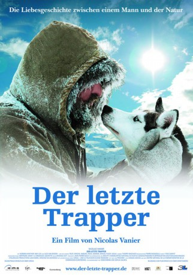

 
 IMDB-Wertung: 7.2 / 10
IMDB-Wertung: 7.2 / 10  Metascore:
Metascore: 
Im kanadischen Yukon-Gebiet lebt Norman Winther, einer der letzten ursprünglichen Trapper Nordamerikas. Gemeinsam mit seiner Frau Nebraska bewohnt er eine aus Baumstämmen gezimmerte Blockhütte und verbringt seine Tage mit dem Aufstellen und Kontrollieren zahlreicher Fallen, in denen er ausgesuchten Pelztieren des Waldes den Garaus bereitet. Werden diese von der Holzindustrie in andere Gebiete vertrieben, müssen auch die Winthers ihr Ränzlein schnüren und den Tieren Richtung Norden folgen.
Jahr: 2004
Dauer: 94 Minuten
FSK: 0
Land: Frankreich Studio: 3L FilmverleihTonspuren: DTS - ,
Untertitel:
Auflösung: 1080p (1920x816) Größe: 7536 MB
Genre: Abenteuer, Dokumentation
Regisseur: Nicolas Vanier
Drehbuch: Nicolas Vanier
Soundtrack: Krishna Levy
Darsteller:
Datei: X:\2004(G-M)\Letzte Trapper, Der (2004, FSK0, 1920x816) 3D.mkv seit 19.11.2015
Festplatte: HD 2003-2004-2005(A-F)
 Es gibt insgesamt 41 Filme in der Gruppe '2004(G-M)'
Es gibt insgesamt 41 Filme in der Gruppe '2004(G-M)'